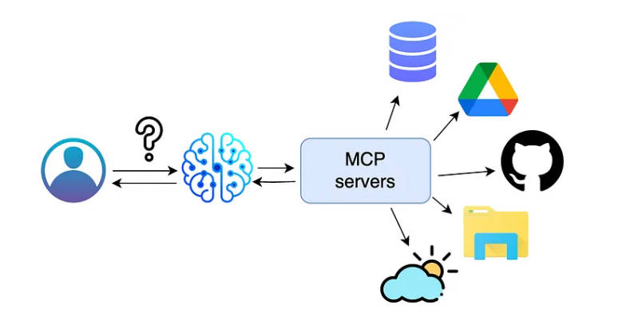
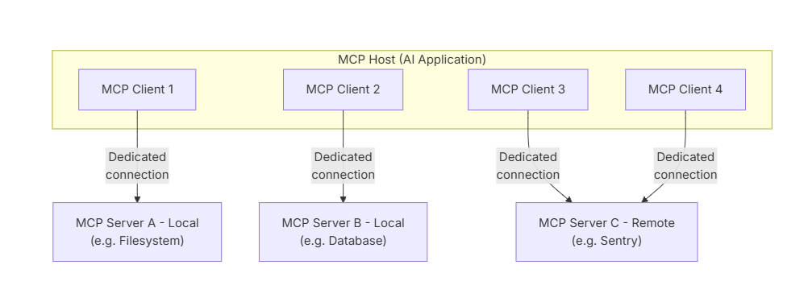

由于我是用的是 vs2019 版本，它仅支持 version 3 preset，所以这里的一些配置可能仅在 version 3 起作用。
大致等价于：
cmake -S . -B build_dir ...
这个阶段的主要工作：
它决定“怎么生成工程”。configurePresets 里的字段基本都在这里起作用。
大致等价于：
cmake --build build_dir ...
这个阶段的主要工作：
它决定“怎么编译”。buildPresets 里的字段基本都在这里起作用。
大致等价于：
ctest --preset ...
如果只关心 VS 里开发/调试，先把重点放在 configure 和 build 即可。
直接以一个 json 模板说明 CMakePreset 有哪些配置，每个配置的作用是什么？
{
"version": 3,
// preset 文件格式版本。
// 对 VS2019 来说，3 是兼容且常用的版本。
// 这不是 CMakeLists.txt 里的 cmake_minimum_required 版本。
"cmakeMinimumRequired": {
"major": 3,
"minor": 20,
"patch": 0
},
// 表示“使用这份 preset 文件，建议的最低 CMake 版本”。
// 它约束的是 preset 机制，不等于项目本身最低 cmake 版本。
// 命令行用 --preset 时，官方建议 3.20+。
"configurePresets": [
{
"name": "base",
"hidden": true,
// hidden=true 表示这是“基类 preset”，用于被继承，不直接显示给用户。
"generator": "Ninja",
// configure 阶段：决定底层生成器。
// 这里选 Ninja，适合统一 CI/命令行/VS 使用体验。
// 如果改成 "Visual Studio 16 2019"，就会变成 VS 多配置生成器。
"binaryDir": "${sourceDir}/out/build/${presetName}",
// configure 阶段：等价于 cmake -B
// 决定 build tree 放哪。
// ${sourceDir} 是源码根目录，${presetName} 是当前 preset 名字。
"cacheVariables": {
"CMAKE_EXPORT_COMPILE_COMMANDS": "ON",
// configure 阶段：导出 compile_commands.json
// 对 clangd、静态分析、代码工具链很有帮助。
"CMAKE_INSTALL_PREFIX": "${sourceDir}/out/install/${presetName}",
// configure 阶段：安装目录
// 配合 cmake --install 使用。
"BUILD_TESTING": "ON"
// 项目常见开关。CTest/单元测试项目常用。
},
"environment": {
"MY_COMPANY_BUILD_ENV": "dev"
},
// configure 阶段环境变量。
// 会影响编译器探测、find_package、工具链发现等。
"vendor": {
"microsoft.com/VisualStudioSettings/CMake/1.0": {
"hostOS": [
"Windows"
]
}
}
// vendor 字段供 IDE 厂商扩展使用，CMake 本体不会解释其内容。
// 这里是微软的 vendor map，常用于 VS 中控制显示/行为。
},
{
"name": "windows-x64-debug",
"displayName": "Windows x64 Debug",
"description": "Ninja + MSVC, x64, Debug build for local development",
"inherits": "base",
// inherits：继承 base preset 的公共配置。
"condition": {
"type": "equals",
"lhs": "${hostSystemName}",
"rhs": "Windows"
},
// version 3 开始可用。
// 只有当前主机系统是 Windows 时，这个 preset 才启用。
"architecture": {
"value": "x64",
"strategy": "external"
},
// configure 阶段的架构信息。
// 对 VS / IDE 特别有用。
// strategy=external 常见于 Ninja + MSVC 环境准备场景：
// IDE 可以用它来准备 x64 编译环境，而不是把 -A 直接传给 Ninja。
"cacheVariables": {
"CMAKE_BUILD_TYPE": "Debug"
}
// 对 Ninja 这种单配置生成器非常重要。
// 如果你换成 VS generator，这个变量通常不是主要开关。
},
{
"name": "windows-x64-release",
"displayName": "Windows x64 Release",
"description": "Ninja + MSVC, x64, Release build",
"inherits": "base",
"condition": {
"type": "equals",
"lhs": "${hostSystemName}",
"rhs": "Windows"
},
"architecture": {
"value": "x64",
"strategy": "external"
},
"cacheVariables": {
"CMAKE_BUILD_TYPE": "Release"
}
},
{
"name": "vs2019-x64-debug",
"displayName": "VS2019 x64 Debug",
"description": "Visual Studio 2019 generator, x64, Debug",
"hidden": false,
"generator": "Visual Studio 16 2019",
// configure 阶段：切换到 VS2019 generator。
// 这是多配置 generator。
"architecture": "x64",
// 对 Visual Studio generator，官方建议用 architecture 表示平台，
// 而不是把平台信息塞进 generator 字符串。
"binaryDir": "${sourceDir}/out/build/${presetName}",
"cacheVariables": {
"CMAKE_INSTALL_PREFIX": "${sourceDir}/out/install/${presetName}",
"BUILD_TESTING": "ON"
},
"vendor": {
"microsoft.com/VisualStudioSettings/CMake/1.0": {
"hostOS": [
"Windows"
]
}
}
// 注意：这里没写 CMAKE_BUILD_TYPE=Debug，
// 因为 VS generator 是多配置，通常应该在 buildPreset 里用 configuration=Debug。
},
{
"name": "vs2019-x64-release",
"displayName": "VS2019 x64 Release",
"description": "Visual Studio 2019 generator, x64, Release",
"generator": "Visual Studio 16 2019",
"architecture": "x64",
"binaryDir": "${sourceDir}/out/build/${presetName}",
"cacheVariables": {
"CMAKE_INSTALL_PREFIX": "${sourceDir}/out/install/${presetName}",
"BUILD_TESTING": "ON"
},
"vendor": {
"microsoft.com/VisualStudioSettings/CMake/1.0": {
"hostOS": [
"Windows"
]
}
}
},
{
"name": "clang-cl-debug",
"displayName": "Windows clang-cl Debug",
"description": "Ninja + clang-cl toolchain on Windows",
"inherits": "base",
"condition": {
"type": "equals",
"lhs": "${hostSystemName}",
"rhs": "Windows"
},
"architecture": {
"value": "x64",
"strategy": "external"
},
"toolchainFile": "${sourceDir}/cmake/toolchains/clang-cl.cmake",
// version 3 常用字段。
// configure 阶段：指定工具链文件。
// 对交叉编译、切换编译器、vcpkg 等很重要。
"cacheVariables": {
"CMAKE_BUILD_TYPE": "Debug"
}
}
],
"buildPresets": [
{
"name": "build-windows-debug",
"displayName": "Build Windows Debug",
"configurePreset": "windows-x64-debug",
// build 阶段：关联到哪个 configure preset。
// build 目录会从这个 configure preset 的 binaryDir 推导出来。
"jobs": 16,
// 等价于 cmake --build --parallel 16
// 控制并行构建数量。
"cleanFirst": false
// build 前是否先清理。
// true 接近“rebuild”。
},
{
"name": "build-windows-release",
"displayName": "Build Windows Release",
"configurePreset": "windows-x64-release",
"jobs": 16,
"cleanFirst": false
},
{
"name": "build-vs2019-debug",
"displayName": "Build VS2019 Debug",
"configurePreset": "vs2019-x64-debug",
"configuration": "Debug",
// 多配置 generator（Visual Studio / Ninja Multi-Config）常用字段。
// 等价于 cmake --build --config Debug
"jobs": 16,
"cleanFirst": false
},
{
"name": "build-vs2019-release",
"displayName": "Build VS2019 Release",
"configurePreset": "vs2019-x64-release",
"configuration": "Release",
"jobs": 16,
"cleanFirst": false
},
{
"name": "rebuild-vs2019-debug",
"displayName": "Rebuild VS2019 Debug",
"configurePreset": "vs2019-x64-debug",
"configuration": "Debug",
"jobs": 16,
"cleanFirst": true
// 先 clean 再 build，适合“强制全量重编”。
}
],
"testPresets": [
{
"name": "test-windows-debug",
"displayName": "Run unit tests for Windows Debug",
"configurePreset": "windows-x64-debug",
// test preset 也绑定 configure preset
"output": {
"outputOnFailure": true
}
// 测试失败时显示详细输出。
},
{
"name": "test-vs2019-debug",
"displayName": "Run unit tests for VS2019 Debug",
"configurePreset": "vs2019-x64-debug",
"configuration": "Debug",
"output": {
"outputOnFailure": true
}
}
]
}
CMakeLists.txt 负责描述项目本身怎么构建。
CMakeLists.txt 描述“项目要构建什么、构建规则是什么”。
它主要回答这些问题：
CMakePresets.json 负责描述这次用什么方式去配置、构建这个项目。
CMakePresets.json 描述“这次怎么调用 CMake、用什么参数和环境去构建”。
它主要回答这些问题：
visual studio 会自动检测目录下放的 CMakePresets.json 文件，读取构建配置。
这是一个简单的 CmakePreset.json:
{
"version": 3,
"configurePresets": [
{
"name": "vs2019-debug",
"displayName": "VS2019 Debug",
"generator": "Visual Studio 16 2019",
"binaryDir": "${sourceDir}/build/debug"
},
{
"name": "vs2019-release",
"displayName": "VS2019 Release",
"generator": "Visual Studio 16 2019",
"binaryDir": "${sourceDir}/build/release"
}
],
"buildPresets": [
{
"name": "build-debug",
"configurePreset": "vs2019-debug",
"configuration": "Debug"
},
{
"name": "build-release",
"configurePreset": "vs2019-release",
"configuration": "Release"
}
]
}
使用 vs 打开包含 preset 的目录（项目）后，顶部栏会自动识别 config、build 配置。

点击生成，就可以选择 cmake_hello.exe 进行运行或者调试了。

通过这种方式运行 cmake 项目的好处是，vs 能够自动监听并且识别 CMakeLists.txt 的变化，自动 configure、generate、build，比较方便。
（完）